Bland and Altman: “Bad statistics makes bad research, bad research may lead to bad medicine, and bad medicine may cost lives.”
David Spiegelhalter: “Why do people find probability so unintuitive and difficult? …
… Well after years of careful research I have finally concluded that it’s because probability actually is unintuitive and difficult.”
My mistakes
Calculation error in my most highly cited paper on regression to the mean
Error in one of my most influential papers: total time that researchers spend applying for funding should be 604 years not 551 years
Simplified research workflow
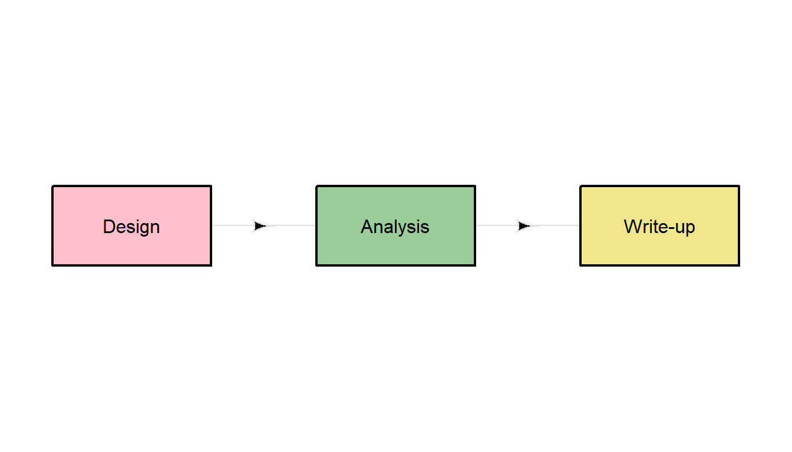
Simplified research workflow
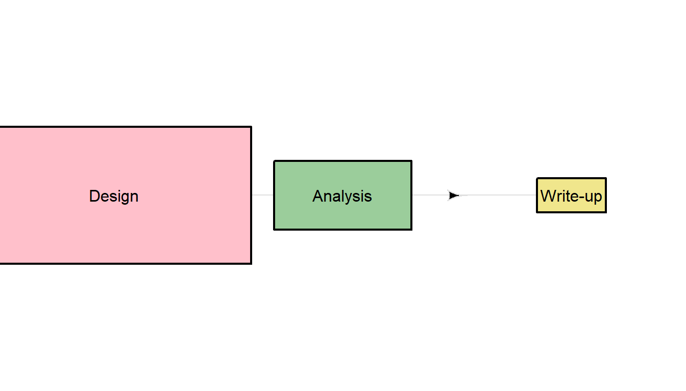
Spend time on study design
“There are only a handful of ways to do a study properly but a thousand ways to do it wrong”, David Sackett
“You cannot fix with analysis what you bungle by design”, from Planning Research on Higher Education by Light, Singer and Willett
More effort in the design and data collection will generally mean less work for the statistics
Ten simple rules for good research practice
PICOT
Study population “P”
Intervention “I”
Comparison or control “C”
Outcome “O”
Time “T”
PICOT
Study population “P”
Intervention “I”
Comparison or control “C”
Outcome “O”
Time “T”
Qualitative: SPIDER (Sample, Phenomenon of Interest, Design, Evaluation, Research type)
Reporting guidelines
Many parts of research are a slog
Purported evidence pyramid
Actual evidence pyramid
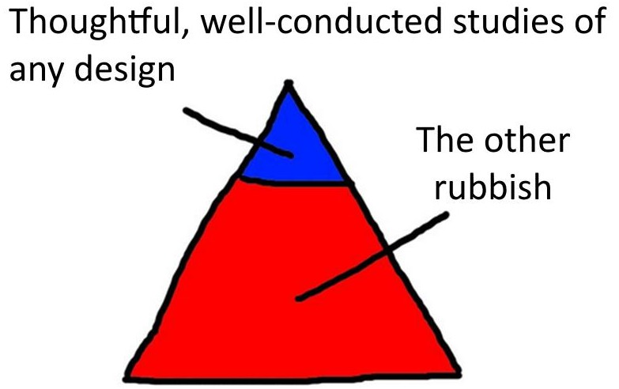
The quality of the study matters more than the design
Current state of research
Correctable weaknesses in the design, conduct, and analysis of biomedical and public health research studies can produce misleading results and waste valuable resources. Small effects can be difficult to distinguish from bias introduced by study design and analyses. An absence of detailed written protocols and poor documentation of research is common. Information obtained might not be useful or important, and statistical precision or power is often too low or used in a misleading way. Insufficient consideration might be given to both previous and continuing studies. Arbitrary choice of analyses and an overemphasis on random extremes might affect the reported findings. Several problems relate to the research workforce, including failure to involve experienced statisticians and methodologists, failure to train clinical researchers and laboratory scientists in research methods and design, and the involvement of stakeholders with conflicts of interest. Inadequate emphasis is placed on recording of research decisions and on reproducibility of research. Finally, reward systems incentivise quantity more than quality, and novelty more than reliability.
Prediction models
Only 7 of 606 published COVID-19 prediction models were useful for clinical practice (DOI: 10.1136/bmj.m1328)
Declaration of Helsinki
Updated in 2024
“Medical research involving human participants must have a scientifically sound and rigorous design and execution that are likely to produce reliable, valid, and valuable knowledge and avoid research waste. The research must conform to generally accepted scientific principles, be based on a thorough knowledge of the scientific literature, other relevant sources of information, and adequate laboratory and, as appropriate, animal experimentation.”
Declaration of Helsinki
Updated in 2024
“Medical research involving human participants must have a scientifically sound and rigorous design and execution that are likely to produce reliable, valid, and valuable knowledge and avoid research waste. The research must conform to generally accepted scientific principles, be based on a thorough knowledge of the scientific literature, other relevant sources of information, and adequate laboratory and, as appropriate, animal experimentation.”
“Scientific integrity is essential in the conduct of medical research involving human participants. Involved individuals, teams, and organizations must never engage in research misconduct.”
The paper I worked on very hard is nearly finished. Next week is the deadline of the special edition of a prestigious journal. My student assistant then shows me an article that looks very similar to mine. A model that I present as new in my article has apparently already been published. Luckily, it was published in a lesser-known journal. What do I do?
Dilemma game
The paper I worked on very hard is nearly finished. Next week is the deadline of the special edition of a prestigious journal. My student assistant then shows me an article that looks very similar to mine. A model that I present as new in my article has apparently already been published. Luckily, it was published in a lesser-known journal. What do I do?
A. I pretend to have never read the article and do not mention it in my own article. I hope the reviewers of the journal don’t know the other article either.
B. At points in my article that overlap with the other article I refer to the other article, thereby risking my paper being rejected because of a lack of substantive contribution.
C. I refer to the other article to a very limited extent so my article appears to be original.
D. I drop the paper and focus on another project.
Normality
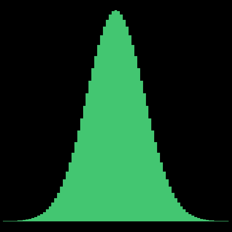
YOU WANT LUMPY DATA!
Normal dogma
Normal dogma
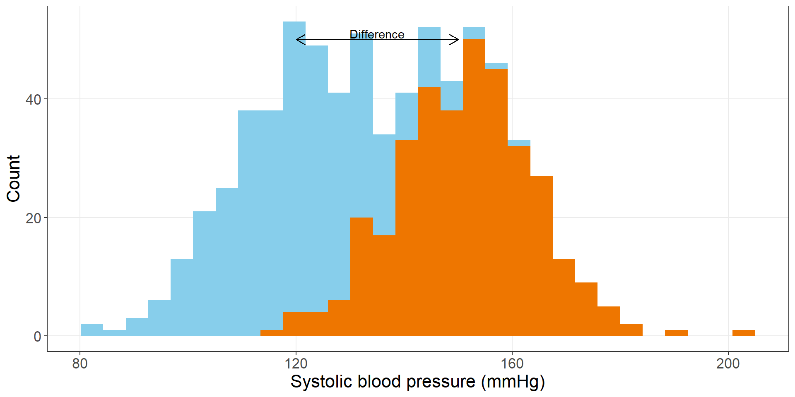
Normal residuals (left-overs)
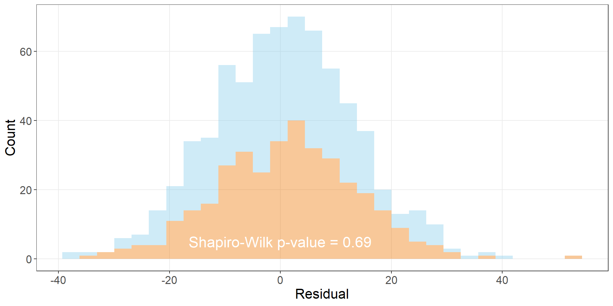
Means are often normal
Original data is binary (zero or one)
Animation shows the distribution of the mean for an increasing sample size
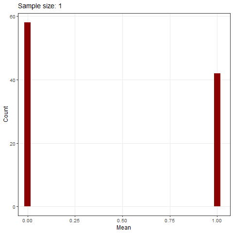
Central limit theorem
Pierre-Simon Laplace, 1749–1827
Non-parametric
Recipe
Statistics by recipe 🤮
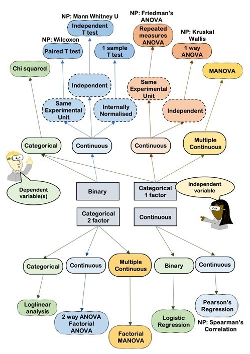
Data collection
Blinding
Used in research for over 200 years
Collect subjective data blind
Biases creep in
• Participant says they don’t feel well
- In the intervention group you tell them to come back tomorrow
- In the control group you say nothing
• Participant knows their treatment group
- In the intervention group they may feel more positive
- In the control group they may feel like they’ve missed out
Biases creep in
• Participant says they don’t feel well
- In the intervention group you tell them to come back tomorrow
- In the control group you say nothing
• Participant knows their treatment group
- In the intervention group they may feel more positive
- In the control group they may feel like they’ve missed out
• Animal studies that did not use randomisation and blinding were far more likely to have a positive result, odds ratio = 5.2 (95% CI: 2.0 to 13.5)
Confirmation bias: our prior beliefs can influence every stage of scientific research (course on this by C4R)
Expectation bias: people’s expectations about the experiment can influence the results, e.g., telling a research participant, “This is going to hurt.”
Many biases
Confirmation bias: our prior beliefs can influence every stage of scientific research (course on this by C4R)
Expectation bias: people’s expectations about the experiment can influence the results, e.g., telling a research participant, “This is going to hurt.”
Long list of biases here – we are all prone to bias, we need to actively work against biases when conducting research
Spend time on your data
Excel is useful, but there are many common mistakes
Be consistent in naming variables and categories, e.g., never: “Male”, “male” and “m” in same variable
Write dates as YYYY-MM-DD, e.g, 2018-10-16
Spend time on your data
Excel is useful, but there are many common mistakes
Be consistent in naming variables and categories, e.g., never: “Male”, “male” and “m” in same variable
Write dates as YYYY-MM-DD, e.g, 2018-10-16
Don’t put multiple variables in one cell, e.g., never “Injury - morning”
Never record information in cell colours
One rectangular data set per Excel sheet
Please please please read and keep this paper: Karl W. Broman & Kara H. Woo (2018) Data Organization in Spreadsheets, The American Statistician, 72:1, 2–10
Don’t throw away data
Common error to collect detailed data and then throw it away at the analysis stage
Continuous measure of upper arm circumference categorised into malnourished (yes/no)
A US state can only afford to give free health care to half its citizens so it decides to randomly allocate healthcare to half the population. A bureaucrat realises that this could be a great way to study the benefits of health care and so suggests a random allocation scheme.
• What are the advantages and disadvantages to the following random allocations:
+ Get a full list of the population and randomly allocate everyone
+ Cover people whose birthday is odd (e.g., 17th Jan covered, 8th August not covered)
+ Cover people whose birthday is in the second half of the year (e.g., 17th Jan not covered, 8th August covered)
+ Cover people if the last digit on their social security number is odd
+ Cover everyone in the youngest half of the population
• What primary and secondary outcomes would you collect? And over what time frames?
• Routinely collected data (e.g., death) may not give a complete picture of the benefits. What other data might you collect?
• The RAND Health Insurance Experiment was an experimental study of health care costs, use and outcomes in the United States, which assigned people randomly to different kinds of plans and followed their behaviour, from 1974 to 1982
• Uninsured low-income adult residents invited to put their name on a list
• State drew 30,000 names by lottery from a list of 90,000; about 10,000 eventually ended up being enrolled in Medicaid (exclusions)
• Selected individuals won the opportunity – for themselves and any household member – to apply for coverage
• The RAND Health Insurance Experiment was an experimental study of health care costs, use and outcomes in the United States, which assigned people randomly to different kinds of plans and followed their behaviour, from 1974 to 1982
• Uninsured low-income adult residents invited to put their name on a list
• State drew 30,000 names by lottery from a list of 90,000; about 10,000 eventually ended up being enrolled in Medicaid (exclusions)
• Selected individuals won the opportunity – for themselves and any household member – to apply for coverage
• There’s a generally accepted rule that a p-value \(<\) 0.05 is statistically significant, whilst any p-value \(\geq\) 0.05 is not
• Means there’s a 0.05 (1 in 20) chance of rejecting the null hypothesis when it’s true
• Historical hangover from early work by Roland Fisher in 1926:
“If one in twenty does not seem high enough odds, we may, if we prefer it, draw the line at one in fifty or one in a hundred. Personally, the writer prefers to set a low standard of significance at the 5 per cent point, and ignore entirely all results which fails to reach this level. A scientific fact should be regarded as experimentally established only if a properly designed experiment rarely fails to give this level of significance.”
• Means that studies with a p-value of 0.0499999 are “accepted”, whilst those with a p-value of 0.0500000 are not, but
- this is only a tiny jump in evidence
- and is a jump that is not itself statistically significant! E.g., in study with an outcome of body mass index it might be the difference between one subject cutting their toenails or not!
• Means that studies with a p-value of 0.0499999 are “accepted”, whilst those with a p-value of 0.0500000 are not, but
- this is only a tiny jump in evidence
- and is a jump that is not itself statistically significant! E.g., in study with an outcome of body mass index it might be the difference between one subject cutting their toenails or not!
• Lazy decision rule and should be avoided
• A p-value of 0.06 is substantially different than a p-value of 0.99
• Always write the p-value as a number, never write “Non significant” or “p \(>\) 0.05” for a p-value above 0.05
Judge p-values on a sliding scale and in context
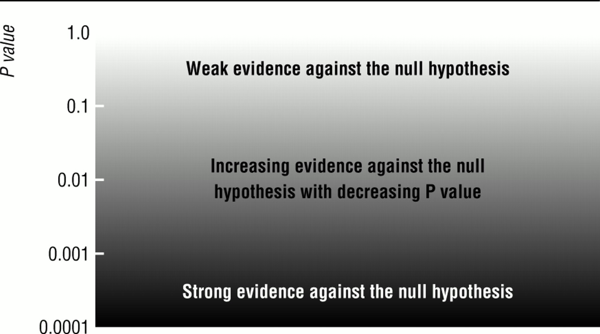
What is the ultimate decision?
• Previous experiments on coin tossing and tea drinking are small and contained
• We are usually interested in big hypothesis, e.g.:
- When should physical rehabilitation start and what rehabilitation methods during and after critical illness achieve the best outcomes for patients?
- How can we enhance patient comfort during Intensive Care (i.e. minimise pain, discomfort, agitation and anxiety) and does this improve patient outcome?
What is the ultimate decision?
• Previous experiments on coin tossing and tea drinking are small and contained
• We are usually interested in big hypothesis, e.g.:
- When should physical rehabilitation start and what rehabilitation methods during and after critical illness achieve the best outcomes for patients?
- How can we enhance patient comfort during Intensive Care (i.e. minimise pain, discomfort, agitation and anxiety) and does this improve patient outcome?
• We rarely make a decision about a hypothesis based on one study
• p-values are usually part of the evidence (or story)
Accumulating evidence
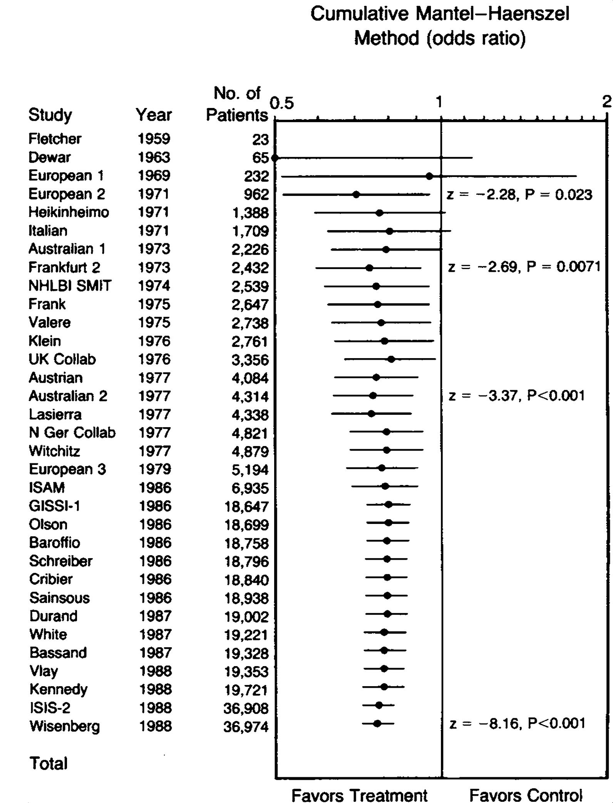
Cumulative meta-analysis of 60 Trials of Intravenous Thrombolytic Agents for Myocardial Infarction
The bias for “significance”
• RCT of a fabricated journal manuscript with two versions:
-One with statistically significant results (P = 0.003)
-One with no difference (P = 0.18)
• Sample size of 210 peer reviewers
The bias for “significance”
• RCT of a fabricated journal manuscript with two versions:
-One with statistically significant results (P = 0.003)
-One with no difference (P = 0.18)
• Sample size of 210 peer reviewers
• Reviewers given the positive version were more likely to:
- Recommend publication (97% vs 80%, P \(<\) 0.001)
- Detect errors (0.9 vs 0.4, P \(<\) 0.001)
- Award higher scores to the identical methods section (8.2 vs 7.5, P = 0.005)
Over-testing
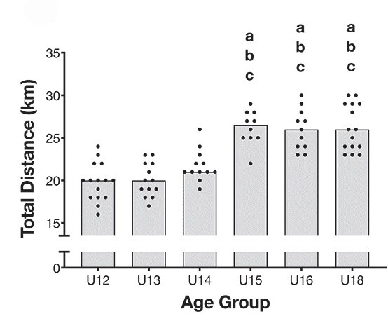
Multiple testing on steroids
Two p-values for every three words!
Statically significant
Statistical thinking
Christopher Tong: “Statistical Inference Enables Bad Science; Statistical Thinking Enables Good Science”
“Formal, probability-based statistical inference should play no role in most scientific research, which is inherently exploratory”
Spin a result
Practical significance
With a big enough sample size, almost any comparison will be statistically significant
The size of the difference matters the most
Practical significance
With a big enough sample size, almost any comparison will be statistically significant
The size of the difference matters the most
1% improvement in blood pressure might be statistically significant but practically useless
Pre-specify the important difference (likely need some thinking)
• An online observational study of 19,000+ people compared couples married between 2005 and 2012 who met online and offline and found that online couples:
○ Were less likely to divorce: 7.7% versus 6.0% (p < 0.002)
○ Had higher marital satisfaction: 5.6 versus 5.5 on a 1-to-7 scale (p < 0.001)
• Do you think the results are real? Are they important? Can you spot any problems with the study design?
Confidence intervals
Confidence intervals
A 95% confidence interval will reach the same conclusions as a two-sided 5% p-value
Picture shows confidence intervals (horizontal lines), means (black dots), and null hypothesis of no change (horizontal dotted line)
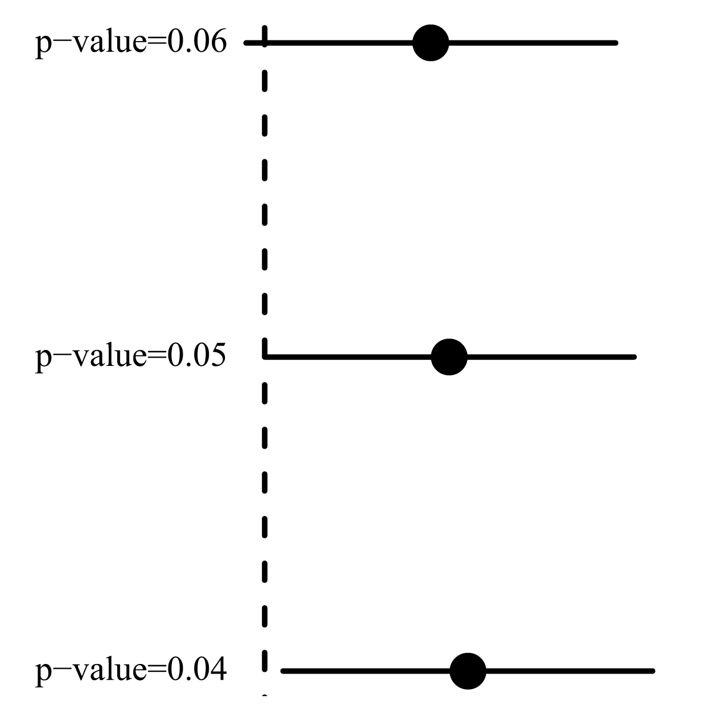
Confidence intervals
• The important number for confidence intervals is usually zero
• E.g., “The new training schedule increased total distance by 1 km (95% CI: –1 km, 3 km)”
• So at the lowest end the new schedule actually decreased the total distance by 1 km
Confidence intervals
• The important number for confidence intervals is usually zero
• E.g., “The new training schedule increased total distance by 1 km (95% CI: –1 km, 3 km)”
• So at the lowest end the new schedule actually decreased the total distance by 1 km
• Confidence intervals are better than p-values because they contain more information and they test the null hypothesis
• For rate ratios or odds ratios the null hypothesis is at one, e.g., “The new training schedule increased the number of injuries by 2.0 compared with the existing schedule (95% CI: 1.2, 3.0)” — which would mean a statistically significant increase in injuries
Ring toss
Calculating a confidence interval is like throwing a ring toss
A larger ring is more likely to include the target
Rings either include or exclude the target
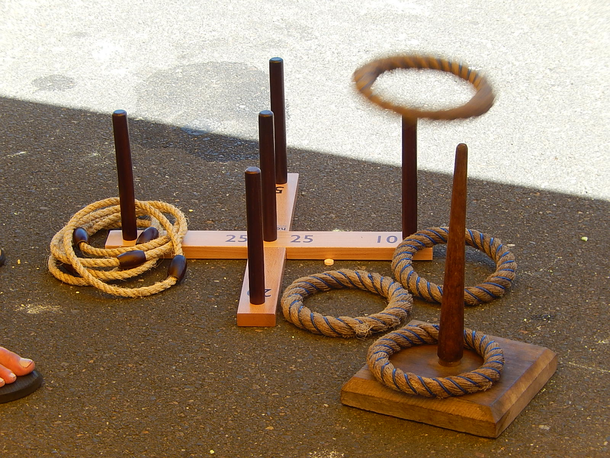
Overlapping intervals
Be careful about judging statistical significance between two groups from confidence intervals
Picture assumes equal standard errors (confidence interval widths) — even harder to judge if this isn’t true
Within person change
Change from baseline
Common design in to examine change over time, often change from baseline
Makes sense to remove this source of variance (difference)
Cross-over
Participants are their own controls
Everyone gets both treatments
Quincunx
Quincunx
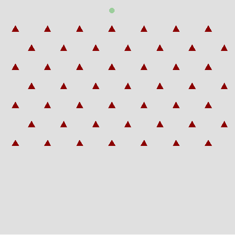
Regression to the mean
Be very careful of designs that select patients based on bad or good baseline scores
Causal analysis
“What causes what?” is a common question in research
Not a purely statistical question
Use your expertise
Effect of warming up on the risk of injury
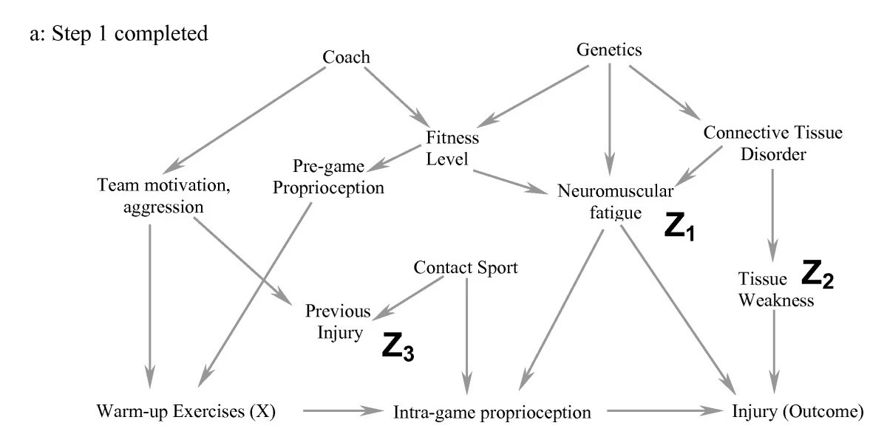
Confounders
Often wrongly defined
Must effect both the outcome and the intervention
Confounder must occur before the intervention
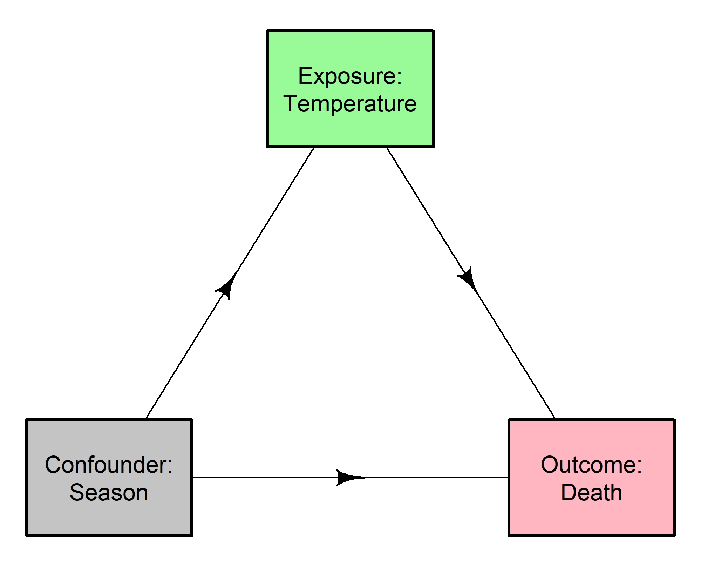
Strong predictors
Strong predictors are associated with the outcome but not the exposure (or intervention)
Useful to know, but not necessary to answer the research question
Over-adjusting
Tempting to add all variables into the model and let the “clever” algorithm decide
Don’t add variables if there’s no plausible direct link with the outcome
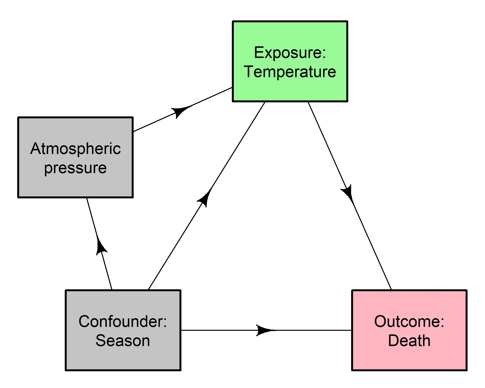
Causal pathway
Don’t adjust for variables on the causal pathway
Don’t use the future
Don’t adjust for anything that happens after the outcome
Don’t automatically delete outliers that don’t fit the data
Look out for outliers and influential variables
Influential observation example
Influential observation example
Influential observation example - with
Influential observation example - without
Outliers and influential observations
If all your results rely on one person/observation, then your results are likely not generalisable. This must be acknowledged in your write-up.
“29 of 100 papers published in Science, Nature and PNAS […] stated significances (or their absence) are based on the presence of a single influential data point.” DOI: 10.1101/2024.10.30.621016v1
Technical stuff
Use the following statistics to look for outliers and influential observations:
Residuals (should always check)
Cook’s distance
DFBETA
Embrace outliers
The most exciting phrase to hear in science, the one that heralds new discoveries, is not “Eureka” but “That’s funny”, Isaac Asimov
Embrace outliers
The most exciting phrase to hear in science, the one that heralds new discoveries, is not “Eureka” but “That’s funny”, Isaac Asimov
“Outliers were removed when the residual had a Studentized residual < -4 or > 4”


.jpg)


.jpg){kind=link}